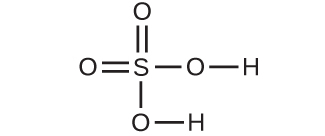

第3章 物質と溶液の組成
図3.1 | スイミングプールの水はさまざまな物質の複雑な混合物であり、それらの相対的な量は、プールを利用する人々の健康と快適さを確保するために慎重に管理されなければなりません。(credit: modification of work by Vic Brincat)
この章の概要
3.1 式量とモルの概念
3.2 経験式と分子式を決定する
3.3 モル濃度
3.4 その他の溶液濃度の単位
はじめに
スイミングプールは、長い間、娯楽、運動、物理療法の人気のある手段となっています。大きなプールを頻繁に新鮮な水で満たすことは現実的ではないので、有害な細菌や藻類の成長を防ぐためにプールの水は定期的に化学物質で処理されます。適切なプールのメンテナンスは、慎重に測定された量でさまざまな化合物を定期的に追加することを必要とします。たとえば、目の炎症を防ぎ、プールの床や配管への損傷を避けるために、水中のカルシウムイオン(Ca²⁺)の相対的な量を一定の範囲内に維持する必要があります。カルシウムレベルを適切に維持するために、カルシウムのカチオンは、アニオンを含むイオン化合物の形で水中に添加されます。したがって、適切なカルシウムレベルを達成するためには、化合物中のCa²⁺の相対的な量とプール内の水の量の両方を知る必要があります。物質(カルシウム含有化合物など)や混合物(プールの水など)の組成の定量的な側面がこの章の主題です。
3.1 式量とモルの概念
この節が終わるまでに、あなたは次のことができるようになります:
•共有結合化合物およびイオン化合物の式量を計算する
•モルという単位の量と、関連する量であるアボガドロ数を定義する
•原子や分子の数、モル、質量の間の関係を説明し、これらの量を互いに導き出す計算を行う
現代化学という科学は、科学者が化学の質的側面だけでなく量的側面も探求し始めたときに開始されたと多くの人が主張しています。たとえば、ドルトンの原子論は、さまざまな化合物に組み合わされた元素の相対的な質量を計算することを可能にするように測定結果を説明しようとする試みでした。原子の質量と化合物の化学式との関係を理解することで、私たちは物質の組成を定量的に記述することが可能になります。
式量
この教科書の前の章では、原子質量単位の発展、平均原子質量の概念、物質の元素構成を表すための化学式の使用について説明しました。これらの考え方を拡張して、物質の式で表されるすべての原子の平均原子質量を合計することによって、物質の式量を計算することができます。
共有結合性の物質の式量
共有結合性の物質の場合、式は物質の1個の分子を構成する原子の数と種類を表します。したがって、式量は分子量と呼んでも間違いではありません。クロロホルムについて考えてみましょう。クロロホルム(CHCl₃)は、かつては手術用麻酔薬として使用されていましたが、現在ではテフロンという「こげつき防止」ポリマーの構成成分であるテトラフルオロエチレンの製造に主に使用されている共有結合化合物です。クロロホルムの分子式は、1個の分子に1個の炭素原子、1個の水素原子、3個の塩素原子が含まれていることを示しています。したがって、クロロホルム分子の平均分子量は、これらの原子の平均原子質量の和に等しいです。図3.2にクロロホルムの分子量119.37amuを導き出すために使用される計算の概要を示します。
図3.2 | クロロホルム分子CHCl₃の平均質量は119.37 amuであり、これはクロロホルムを構成するそれぞれの原子の平均原子質量の和です。このモデルはクロロホルムの分子構造を示しています。
同様に、アスピリン分子C₉H₈O₄の分子量は、9個の炭素原子、8個の水素原子、4個の酸素原子の原子質量の和であり、180.15 amuとなります(図3.3)。

図3.3 | アスピリン分子の平均質量は180.15 amuです。このモデルはアスピリンC₉H₈O₄の分子構造を示しています。
例題3.1 共有結合化合物の分子量を計算する
イブプロフェン(C₁₃H₁₈O₂)は共有結合化合物であり、アドビルやモトリンなどのいくつかの一般的な処方箋なしで買える鎮痛剤に含まれる有効成分です。この化合物の分子量(amu)は何ですか?
解法
この化合物の分子は、13個の炭素原子、18個の水素原子、2個の酸素原子で構成されています。上記のアプローチに従うと、この化合物の平均分子量は、以下のようになります:
学習内容の確認
アセトアミノフェンC₈H₉NO₂は、共有結合化合物であり、タイレノールなどのいくつかの一般的な処方箋なしで買える鎮痛剤に含まれる有効成分です。この化合物の分子量(amu)は何ですか?
解答:151.16 amu
イオン化合物の式量
イオン化合物は、全体として電気的に中性の物質を生成するために、個別のカチオンとアニオンが所定の比率で結合して構成されています。イオン化合物の式量は、共有結合化合物の式量と同じように、化合物の式中の全原子の平均原子質量を合計することによって計算されます。しかしながら、イオン化合物の式は個別の分子の組成を表すものではないため、式量を「分子量」と呼ぶのは正しくないことに注意してください。
例として、一般的な食卓塩の化学名である塩化ナトリウム(NaCl)を考えてみましょう。塩化ナトリウムは、ナトリウムカチオン(Na⁺)と塩化物アニオン(Cl⁻)が1:1の比率で結合したイオン化合物です。この化合物の式量は 58.44 amu として計算されます(図3.4参照)。

図3.4 | 食卓塩NaClは、1:1の比率で結合したナトリウムイオンと塩化物イオンの配列を含んでいます。その式量は58.44 amuです。
この計算では、ナトリウムカチオンと塩化物アニオンの質量ではなく、中性のナトリウム原子と塩素原子の平均質量が使われていることに注意してください。このアプローチは、イオン化合物の式量を計算する際には完全に許容されています。ナトリウムカチオンの質量はナトリウム原子よりもわずかに小さい(電子を欠いているため)としても、その差は、塩化物アニオンの質量が塩素原子よりもわずかに大きい(余分な電子があるため)という事実によって相殺されます。また、電子の質量は典型的な原子の質量に比べて無視できるほど小さいものです。孤立したイオンの質量を計算する場合でも、欠けている電子や追加の電子は、一般的には無視することができます。なぜなら、それらの電子の全体の質量への寄与は無視できる程度であり、計算された質量が適切に丸められるときに失われるであろう非有効数字に反映されるだけだからです。このガイドラインのわずかな例外は、原子質量が正確にわかっている元素に由来する非常に軽いイオンです。
例題3.2 イオン化合物の式量を計算する
硫酸アルミニウムAl₂(SO₄)₃はイオン化合物であり、紙の製造やさまざまな水質浄化プロセスで使用されています。この化合物の式量(amu)は何ですか?
解法
この化合物の式は、Al³⁺イオンとSO₄²⁻イオンが2:3の比率で結合していることを示しています。式量を計算するためには、式をより簡単な形のAl₂S₃O₁₂に書き換えると便利です。上記のアプローチに従うと、この化合物の式量は以下のように計算されます:
学習内容の確認
リン酸カルシウムCa₃(PO₄)₂は、イオン化合物であり、食品に添加される一般的な凝固防止剤です。リン酸カルシウムの式量(amu)は何ですか?
解答:310.18 amu
モル
物質の同一性は、それが含む原子やイオンの種類だけでなく、それぞれの種類の原子やイオンの量によっても定義されます。たとえば、水(H₂O)と過酸化水素(H₂O₂)は、それぞれの分子が水素原子と酸素原子で構成されているという点で似ています。しかしながら、水分子には酸素原子が1つしかないのに対し、過酸化水素の分子には酸素原子が2つあるため、この2つの物質は非常に異なる性質を示します。今日では、洗練された機器を使ってそのような特徴を示す微視的な性質を直接測定することができます。しかしながら、その性質は、元々は、比較的単純な道具(天秤や容積測定用のガラス器具)を使って巨視的な性質(物質の塊の質量と体積)を測定していたことから得られました。この実験的アプローチでは、物質の量を表す新しい単位であるモルを導入する必要がありました。モルは現代化学という科学において欠かせないものとして残っています。
モルは、ペア(2個)、ダース(12個)、グロス(144個)などといった身近な単位に似た量の単位です。これは、物質の試料中の原子または分子の数についての特定の尺度を提供します。「モル」という語のラテン語の意味合いの1つは「大きなまとまり」または「塊」であり、これはこの単位のための名前の使用法と一致しています。モルは、簡単に測定できる巨視的な性質である塊の質量と、非常に重要な基本的な性質である原子や分子などの数との間のつながりを提供します。1モルの物質とは、6.02214076 × 10²³個の個別の実体(原子または分子)が存在する量のことです。この大きな数は基礎定数であり、イタリアの科学者アメデオ・アボガドロにちなんでアボガドロ数(NA)またはアボガドロ定数として知られています。この定数は、「パーモル」という明示的な単位で適切に報告され、便利な丸められたバージョンは6.022×10²³/モルです。
量の単位としての定義からすると、どの元素の1モルにも他の元素の1モルと同じ数の原子が含まれていることになります。しかしながら、異なる元素の1モルの質量は、個々の原子の質量が大きく異なるために、違ったものとなります。元素(または化合物)のモル質量は、その物質の1モルの質量をグラムで表したものであり、1モルあたりのグラム(g/mol)という単位で表される性質です(図3.5参照)。
図3.5 | それぞれの試料には6.022×10²³個の原子、すなわち1.00molの原子が含まれています。左から右(上段):亜鉛65.4g、炭素12.0g、マグネシウム24.3g、銅63.5g。左から右(下段):硫黄32.1g、ケイ素28.1g、鉛207g、スズ118.7g。(credit: modification of work by Mark Ott)
どのような物質のモル質量も、その原子または式の重量(amu で表されたもの)と数値的に同じになります。amuの定義によれば、¹²C原子1個の重さは12 amu(その原子質量は12 amu)です。1モルの¹²Cは12gの重さとなります(そのモル質量は12g/molです)。この関係性は、すべての元素に当てはまります。なぜなら、それらの元素の原子質量は、amuの基準物質である¹²Cの原子質量と相対的に測定されているからです。この原理を拡張すると、化合物のモル質量(グラムで表されたもの)と、その式量(amuで表されたもの)とは数値的に同じになります(図3.6)。
図3.6 | それぞれの試料には6.02×10²³個の分子または式単位、すなわち1.00 molの化合物または元素が含まれています。左上から時計回りに、C₈H₁₇OH(1-オクタノール、式量130.2 amu)130.2g、HgI₂(ヨウ化水銀(II)、式量454.4 amu)454.4 g、CH₃OH(メタノール、式量32.0 amu)32.0 g、S₈(硫黄、式量256.5 amu)256.5 g。(credit: Sahar Atwa)
原子質量とモル質量は数値的には同じですが、それぞれの単位の大きさ(amu と g)が大きく異なることに表されるように、スケールの点では非常に違っていることを心に留めておいてください。モルの巨大さを理解するために、重さが約0.03gの小さな水滴を考えてみましょう(図3.7参照)。これは水1モル(およそ18 g)のごく一部を表すに過ぎませんが、明確に想像できる以上に多くの水分子が含まれています。もしその分子を地球上の約70億人に均等に分配したとすると、1人あたり1000億個以上の分子を受け取ることになります。
図3.7 | 1つの水滴に含まれる分子の数は、地球上の人間の数の約1000億倍です。(credit: “tanakawho”/Wikimedia commons)
学習へのリンク
化学では、6.022×10²³個の何かを表すためにモルが使われていますが、このような大きな数を概念化するのは難しいかもしれません。このビデオ(http://openstaxcollege.org/l/16molevideo)を見て、そのあとに続く「考える(Think)」の質問に答えてください。さらに詳しく知りたい場合は、「深く掘り下げる(Dig Deeper)」の下にある情報を確認してください。
式量、モル、およびアボガドロ数の関係は、次のいくつかの例題で示されるように、物質および化合物の組成を記述するさまざまな量を計算するために適用することができます。
例題3.3 元素のグラムからモルを導出する
アメリカ農務省の栄養ガイドラインによると、食事中のカリウムの推定平均必要量は4.7gとされています。カリウムの推定平均必要量は何モルですか?
解法
Kの質量が与えられ、対応するKのモルでの量が要求されています。周期表を参照すると、Kの原子質量は39.10 amuなので、そのモル質量は39.10 g/molです。与えられたKの質量(4.7g)は、モル質量(39.10g)の10分の1よりも少し多いので、モル数の合理的な「大まかな」推定値は0.1molよりもわずかに大きいでしょう。
物質のモルでの量は、その質量(g)をそのモル質量(g/mol)で割ることによって計算することができます:
係数-ラベル法は、この数学的アプローチを支持しています。なぜなら、単位「g」が打ち消され、答えが「mol」の単位を持っているからです:
\[ \rm4.7g\ K \left(\frac{mol\ K}{39.10\ g\ K}\right)= 0.12\ mol\ K \]
計算された大きさ(0.12 mol K)は、0.1 molよりも少し大きいので、私たちの大まかな予想と一致しています。
学習内容の確認
ベリリウムは、医療用画像撮影装置の透明なX線窓の製造に使用される軽金属です。重さ3.24gの薄い箔の窓には何モルのBeが入っていますか?
解答:0.360 mol
例題3.4 元素のモルからグラムを導出する
1リットルの空気には9.2×10⁻⁴molのアルゴンが含まれています。空気1リットル中のアルゴンの質量は何ですか?
解法
Arのモルの量が与えられており、対応する質量をグラムで導出するためにはこれを使用しなければなりません。Arの量は1モル未満なので、質量はArの1モルの質量(約40g)よりも少なくなるでしょう。問題のモル量は1モルの約1000分の1(およそ10⁻³) ですので、対応する質量はモル質量の約1000分の1(およそ0.04g) となります:
この場合、論理的には、与えられた量(mol)にモル質量(g/mol)を掛けます(これは係数-ラベル法により支持されます):
\[ \rm9.2×10^{−4}\ mol\ Ar\left(\frac{39.95\ g\ Ar}{mol\ Ar}\right)= 0.037\ g\ Ar \]
結果は、0.04g前後のArという予想と一致しています。
学習内容の確認
2.561モルの金の質量は何ですか?
解答:504.4 g
例題3.5 元素の質量から原子の数を導出する
銅は一般的に電線の製造に使われています(図3.8)。銅線5.00gの中に銅原子は何個あるでしょうか?
図3.8 | 銅線は、非常に多くの銅の原子で構成されています。(credit: Emilian Robert Vicol)
解法
銅線内のCu原子の数は、2段階の計算によって、その質量から都合よく導出することができます:まず最初にCuのモルの量を計算し、次に、アボガドロ数(NA)を使用してこのモルの量をCu原子の数に変換します:
与えられた試料の質量(5.00グラム)がCuの1モルの質量(およそ64グラム)の10分の1を少し下回ることを考慮すると、試料内の原子の数の合理的な見積もりは、NAの10分の1のオーダー、すなわち約10²²個のCu原子ということになるでしょう。2段階の計算を実行すると、以下が得られます:
\[ \rm5.00\ g\ Cu\left(\frac{mol\ Cu}{63.55\ g\ Cu}\right)\left(\frac{6.022 × 10^{23}\ atoms}{mol\ Cu}\right)= 4.74×10^{22}\ 個の銅原子 \]
係数-ラベル法によって所望の単位を相殺することができ、計算された結果は予想通り10²²のオーダーです。
学習内容の確認
川の砂利を掬って金を探している人が15.00gの純金を採取しました。この量の金には何個の金原子が含まれていますか?
解答:4.586 × 10²²個の金原子
例題3.6 化合物のグラムからモルを導出する
私たちの体はアミノ酸からタンパク質を合成しています。それらのアミノ酸の1つにグリシンがあります。グリシンはC₂H₅O₂Nの分子式を有しています。グリシン28.35g中には何モルのグリシン分子が含まれているでしょうか?
解法
例題3.3で元素に使用したのと同じ手順に従って、化合物の質量から化合物のモル数を導出します:

この計算にはグリシンのモル質量が必要であり、それは分子量と同じ方法で計算されます。1モルのグリシン(C₂H₅O₂N)は、2モルの炭素、5モルの水素、2モルの酸素、1モルの窒素を含みます:
与えられたグリシンの質量(およそ28 g)は、モル質量(およそ75 g/mol)の3分の1よりも少し多いので、計算された結果は、1モルの3分の1(およそ0.33 mol)よりも少し大きいことが予測されます。化合物の質量をそのモル質量で割ると以下が得られます:
\[ \rm28.35\ g\ グリシン\left(\frac{mol\ グリシン}{75.07\ g\ グリシン}\right)= 0.378\ mol\ のグリシン \]
この結果は大まかな予測と一致しています。
学習内容の確認
25gのスクロースの試料の中に、スクロース(C₁₂H₂₂O₁₁)は何モル含まれていますか?
解答:0.073 mol
例題3.7 化合物のモルからグラムを導出する
ビタミンCは分子式C₆H₈O₆の共有結合化合物です。4～8歳の子供の1日のビタミンC推奨食事摂取量は1.42×10⁻⁴molです。この摂取量の質量は何グラムですか?
解法
化合物の質量は、元素についてのモルの量から求めることができます:

この化合物のモル質量は176.124 g/molと計算されます。与えられたモル数は1モルのごくわずかな部分(およそ10⁻⁴、または1万分の1)なので、対応する質量はモル質量の約1万分の1(およそ0.02g)になると予想されます。計算を行うと、以下のようになります:
\[ \rm1.42×10^{−4}\ mol\ ビタミンC\left(\frac{176.124\ g\ ビタミンC}{mol\ ビタミンC}\right)= 0.0250\ g\ ビタミンC \]
これは、予想された結果と一致しています。
学習内容の確認
ヒドラジン(N₂H₄)の0.443 molの質量は何ですか?
解答:14.2 g
例題3.8 化合物の質量から原子の数と分子の数を導出する
人工甘味料の包みには、40.0 mgのサッカリン(C₇H₅NO₃S)が含まれています。サッカリンは以下の構造式を有します:
サッカリンが183.18g/molのモル質量を持っているとすると、サッカリンの40.0mg(0.0400g)の試料にはいくつのサッカリン分子が含まれていますか?また、同じ試料にいくつの炭素原子が含まれていますか?
解法
化合物の与えられた質量の中の分子の数は、例題3.6で示されたように、最初にモル数を導出し、次にアボガドロ数を掛けることによって計算されます:
サッカリンについての与えられた質量とモル質量を使用して、以下が得られます:
\[ \rm0.0400\ g\ C_7H_5NO_3S \left(\frac{mol\ C_7H_5NO_3S}{183.18\ g\ C_7H_5NO_3S}\right) \left(\frac{6.022 × 10^{23}\ C_7H_5NO_3S\ 分子}{1\ mol\ C_7H_5NO_3S}\right)\\ = 1.31 × 10^{20}\ C_7H_5NO_3 S\ 分子 \]
化合物の式は、それぞれの分子が7つの炭素原子を含むことを示しているので、与えられた試料の中のC原子の数は以下の通りです:
\[ \rm1.31 × 10^{20} C_7H_5NO_3S分子 \left(\frac{7\ C原子}{1\ C_7H_5NO_3S分子}\right) = 9.17 × 10^{20}\ C原子 \]
学習内容の確認
9.213 gの化合物C₄H₁₀には、いくつのC₄H₁₀分子が含まれていますか?いくつの水素原子が含まれていますか?
解答:9.545 × 10²²個のC₄H₁₀分子、9.545 × 10²³個のH原子
さまざまな科学のつながり
脳内の神経伝達物質の分子を数える
脳は中枢神経系の制御センターです(図3.9)。脳は、筋肉やその他の内部器官との間でシグナルを送受信し、それらの機能を監視・制御しています。また、脳は感覚器官によって検出された刺激を処理し、外界との相互作用を導きます。そして脳には、私たちの知性と感情を生み出す複雑な生理学的プロセスが収容されています。神経科学という広い分野は、脳の解剖学や生理学の研究を含め、中枢神経系の構造と機能のあらゆる側面を網羅しています。過去数十年の間に脳の研究は大きく進展しており、2013年に発表された連邦政府のイニシアチブである「BRAINイニシアチブ」は、さまざまな産業界、学術界、政府機関の一丸となった取り組みを通じてこれらの進歩を加速させ、活用することを目的としています(詳細は www.whitehouse.gov/share/brain-initiativeで利用可能です)。
図3.9 | (a)典型的な人間の脳の重さは約1.5kg、体積は約1.1Lを占めます。(b)ニューロンと呼ばれる特殊な細胞によって脳組織の中や中枢神経系全体に情報が伝達されています(顕微鏡写真は1600倍の拡大率で細胞を示しています)。
ニューロンと呼ばれる特殊な細胞は、中枢神経系のさまざまな部分の間で電気シグナルと化学シグナルによって情報を伝達しています。化学的なシグナリングは、異なるニューロン間の接触部で起こります。一方の細胞が分子(神経伝達物質と呼ばれます)を放出し、それが細胞間の小さな隙間(シナプスと呼ばれます)を横切って拡散して、もう一方の細胞の表面に結合します。これらの神経伝達物質の分子は、小胞と呼ばれる小さな細胞内構造の中に貯蔵されます。小胞は細胞壁と融合し、ニューロンが適切に刺激されると開いて内容物を放出します。このプロセスはエキソサイトーシスと呼ばれています(図3.10参照)。非常に広範に研究されている神経伝達物質の1つにドーパミン(C₈H₁₁NO₂)があります。ドーパミンは、人間の幅広い行動に影響を与えるさまざまな神経学的プロセスに関与しています。脳のドーパミン系における機能障害は、パーキンソン病や統合失調症などの重篤な神経疾患の原因となります。
図3.10 | (a)化学シグナルは、神経伝達物質の分子が細胞間の小さな隙間(シナプス)に放出されることによってニューロンから他の細胞へと伝達されます。(b)ドーパミン(C₈H₁₁NO₂)は神経伝達物質であり、多くの神経学的プロセスに関与しています。
ドーパミンのシグナリングに関わる複雑なプロセスの重要な側面の1つは、エキソサイトーシス時に放出される神経伝達物質の分子の数です。この数は神経学的反応(およびそれに続く人間の思考や行動)を決定する中心的な要因であるため、薬物の投与などの特定の制御された刺激によってこの数がどのように変化するかを知っておくことが重要です。また、放出される神経伝達物質の分子の数の変化の原因となるメカニズム(たとえば、エキソサイトーシスの機能不全、ニューロン内の小胞の数の変化、あるいはそれぞれの小胞内の神経伝達物質の分子の数の変化など)を理解することも重要です。
最近では、個々の小胞に貯蔵されているドーパミン分子の数と、小胞がエキソサイトーシスを受けたときに実際に放出する量を直接測定するなどの進歩がなされてきました。非常に少量のドーパミン分子を選択的に検出することのできる小型化されたプローブを用いて、科学者は、ある種のマウスの脳のニューロンの小胞には、小胞1個あたり平均3万個のドーパミン分子(約5×10⁻²⁰molまたは50 zmol)が含まれていることを見出しました。さまざまな薬物治療を受けたマウスのこれらのニューロンを分析すると、個々の小胞に含まれるドーパミン分子の平均数が顕著に変化していることが示されています(使用された特定の薬物に応じて最大で3倍に増減します)。また、これらの研究は、ある小胞に含まれるドーパミンのすべてがエキソサイトーシス中に放出されるわけではないことを示しており、薬物療法を用いて放出される割合を調節することが可能であるかもしれないことを示唆しています。[1]
3.2 経験式と分子式を決定する
この節が終わるまでに、あなたは次のことができるようになります:
•化合物のパーセント組成を計算する
•化合物の経験式を決定する
•化合物の分子式を決定する
前節では、物質の塊での質量とそれに含まれる原子や分子の数(モル数)との関係について議論しました。物質の化学式がわかれば、その物質の質量からその物質の量(モル数)を求めることができますし、その逆もまた然りです。しかし、物質の化学式が不明な場合はどうでしょうか?この節では、実験的な質量測定から未知の物質の化学式を導き出すために、同じ原理を適用します。
パーセント組成
化合物の元素構成はその化学的な同一性を定義し、化学式はこの元素構成を表す最も簡潔な方法です。化合物の式が不明な場合、実験的に式を決定するプロセスの最初のステップとして、それぞれの構成元素の質量を測定することがしばしばあります。これらの測定結果から、化合物のパーセント組成を計算することができます。パーセント組成は、化合物中のそれぞれの元素の質量による割合として定義されます。たとえば、炭素と水素のみで構成される気体の化合物を考えてみましょう。この化合物のパーセント組成は以下のように表すことができます:
\[ \rm％H =\frac{質量\ H}{質量\ 化合物}× 100％\\ ％C =\frac{質量\ C}{質量\ 化合物}× 100％ \]
この気体の10.0gの試料を分析した結果、2.5gのHと7.5gのCが含まれていることがわかった場合、パーセント組成は25%のHと75%のCと計算されるでしょう:
\[ \rm％H =\frac{2.5\ g\ H}{10.0\ g\ 化合物}× 100％=25％\\ ％C =\frac{7.5\ g\ C}{10.0\ g\ 化合物}× 100％=75％ \]
例題3.9 パーセント組成を計算する
炭素、水素、窒素からなる液体の化合物の試料12.04gを分析したところ、Cが7.34g、Hが1.85g、Nが2.85g含まれていることが示されました。この化合物のパーセント組成は何ですか?
解法
パーセント組成を計算するには、それぞれの元素の実験的に得られた質量を化合物の全質量で割ってから、パーセンテージに変換します:
\[ \rm％C =\frac{7.34\ g\ C}{12.04\ g\ 化合物}× 100％ = 61.0％\\ ％H =\frac{1.85\ g\ H}{12.04\ g\ 化合物}× 100％ = 15.4％\\ ％N =\frac{2.85\ g\ N}{12.04\ g\ 化合物}× 100％ = 23.7％ \]
分析の結果、この化合物は質量比でCが61.0%、Hが15.4%、Nが23.7%であることがわかりました。
学習内容の確認
炭素、酸素、および塩素のみを含む気体の化合物の24.81gの試料は、3.01gのC、4.00gのO、および17.81gのClを含むことが判明しています。この化合物のパーセント組成は何ですか?
解答:Cが12.1%、Oが16.1%、Clが71.8%
分子式または経験式からパーセント組成を決定する
パーセント組成は、既知の式を持つさまざまな化合物中の所定の元素の相対的な存在比を評価するのにも有用です。一例として、一般的な窒素含有肥料であるアンモニア(NH₃)、硝酸アンモニウム(NH₄NO₃)、尿素(CH₄N₂O)を考えてみましょう。元素の窒素は農業の用途における有効成分であるため、これらの肥料の間で選択をする消費者にとっては、化合物中の窒素の質量パーセンテージは、実用的で経済的な関心事です。このような用途では、化合物のパーセント組成は、その式量と構成元素の原子質量から容易に導き出すことができます。NH₃の分子には、1個のN原子(重さは14.01 amu)と、3個のH原子(重さは全体で(3×1.008 amu)=3.024 amu)が含まれています。したがって、アンモニアの式量は、(14.01 amu + 3.024 amu) = 17.03 amuであり、そのパーセント組成は以下のようになります:
\[ \rm％N =\frac{14.01\ amu\ N}{17.03\ amu\ NH_3}× 100％ = 82.27％\\ ％H =\frac{3.024\ amu\ H}{17.03\ amu\ NH_3}× 100％ = 17.76％ \]
この同じアプローチは、一対の分子、1ダースの分子、または1モルの分子などを考慮するために使うことができます。最後の量が最も便利なものであり、原子質量および式量の代わりに単純にモル質量を使用することを伴うでしょう(例題3.10で示されるように)。問題の化合物の分子式または経験式が既知である限りにおいて、パーセント組成は、化合物の元素の原子質量またはモル質量から導き出すこともできるでしょう。
例題3.10 分子式からパーセント組成を決定する
アスピリンは、分子式C₉H₈O₄の化合物です。そのパーセント組成は何ですか?
解法
パーセント組成を計算するには、既知の質量のC₉H₈O₄の中にあるC、H、およびOの質量が必要です。1 molのC₉H₈O₄を考慮し、そのモル質量(180.159 g/mole、化学式から決定)を使用して、それぞれの元素のパーセンテージを計算するのが便利です:
\[ \rm ％C = \frac{9\ mol\ C× モル質量\ C}{モル質量\ C_9H_8O_4}× 100 = \frac{9 × 12.01\ g/mol}{180.159\ g/mol}× 100 = \frac{108.09\ g/mol}{180.159\ g/mol}× 100\\ ％C = 60.00％\ C\\ \rm ％H = \frac{8\ mol\ H× モル質量\ H}{モル質量\ C_9H_8O_4}× 100 = \frac{8 × 1.008\ g/mol}{180.159\ g/mol}× 100 = \frac{8.064\ g/mol}{180.159\ g/mol}× 100\\ ％H = 4.476％\ H\\ \rm ％O = \frac{4\ mol\ O× モル質量\ O}{モル質量\ C_9H_8O_4}× 100 = \frac{4 × 16.00\ g/mol}{180.159\ g/mol}× 100 = \frac{64.00\ g/mol}{180.159\ g/mol}× 100\\ ％O = 35.52％\ O \]
適切に丸めた場合、これらのパーセンテージの合計は100.00%になることに注意してください。
学習内容の確認
化合物Fe₂O₃の中の鉄の質量パーセンテージは、3つの有効数字だと、いくつになるでしょうか?
解答:Feは69.9%
経験式の決定
前述したように、化合物の化学式を決定する最も一般的なアプローチは、まずそれを構成する元素の質量を測定することです。しかしながら、化学式は物質中の原子の相対的な数を表すものであり、原子の相対的な質量を表すものではない、ということを覚えておいてください。したがって、実験的に導き出された質量を含むデータを使って、化合物に含まれる原子の対応する数を導き出さなければなりません。これは、モル質量を用いてそれぞれの元素の質量をモル数に変換することで達成されます。これらのモル量を使って整数比を計算し、それを用いて物質の経験式を導出することができます。1.71 gのC と 0.287 gのH を含むと決定された化合物の試料を考えてみましょう。原子の対応する数は(モルで表すと):
\[ \rm1.71\ g\ C×\frac{1\ mol\ C}{12.01\ g\ C}= 0.142\ mol\ C\\ 0.287\ g\ H×\frac{1\ mol\ H}{1.008\ g\ H}= 0.284\ mol\ H \]
したがって、この化合物は以下の式で表されます:
\[ \rm C_{0.142} H_{0.284} \]
慣例に従うと、式には整数の添え字がつけられますが、これはそれぞれの添え字を小さい方の添え字で割ることによって達成できます:
\[ \rm C_{\frac{0.142}{0.142}} H_{\frac{0.284}{0.142}}\ すなわち CH_2 \]
(「1」の添え字は書かれていませんが、他の数字が書かれていない場合には、「1」が仮定されていることを思い出してください。)
したがって、この化合物の経験式はCH₂です。これは化合物の分子式であるかもしれませんし、そうではないかもしれません。しかしながら、それを決定するには追加の情報が必要とされます (この節の後のほうで議論します)。
別の例として、5.31gのClと8.40gのOを含むと決定された化合物の試料を考えてみましょう。同じアプローチに従うと、以下の仮の経験式が得られます:
\[ \rm Cl_{0.150} O_{0.525} = Cl_{\frac{0.150}{0.150}}O_{\frac{0.525}{0.150}}= ClO_{3.5} \]
この場合、最小の添え字で割っても、まだ経験式の中に小数の添え字が残ります。これを整数に変換するためには、それぞれの添え字を2倍すると、同じ原子比を保持したまま、最終的な経験式としてCl₂O₇が得られます。
要約すると、経験式は実験的に測定された元素の質量から次のようにして導出されます:
それぞれの元素の質量からそれぞれの元素のモル数を導出します
それぞれの元素のモル量を最小のモル量で割って、仮の経験式の添え字を得ます
必要に応じて、すべての係数に整数を掛けて、添え字の最小の整数比が得られるようにします
図3.11は、元素Aと元素Xを含む物質について、フローチャート形式でこの手順の概要を示しています。
図3.11 | 試料中のすべての元素の質量から化合物の経験式を導き出すことができます。
例題3.11 化合物の元素の質量から化合物の経験式を決定する
多くの鉄鉱石に含まれる鉄の酸化物である黒色鉱物ヘマタイト(図3.12)の試料には、鉄が34.97g、酸素が15.03g含まれています。ヘマタイトの経験式は何でしょうか?

図3.12 | ヘマタイトは宝飾品に使われる鉄の酸化物です。(credit: Mauro Cateb)
解法
この問題では、それぞれの元素のグラムでの質量が提供されています。それぞれのモル数を求めることから始めましょう:
\[ \rm 34.97\ g\ Fe\left(\frac{mol\ Fe}{55.85\ g}\right)= 0.6261\ mol\ Fe\\ 15.03\ g\ O\left( \frac{mol\ O}{16.00\ g}\right)= 0.9394\ mol\ O \]
次に、より小さいモル数で割って、鉄と酸素のモル比を導出します:
\[ \rm \frac{0.6261}{0.6261}= 1.000\ mol\ Fe\\ \frac{0.9394}{0.6261}= 1.500\ mol\ O \]
比率は、1.000 mol の鉄に対して1.500 molの酸素です:
\[ \rm Fe_{1} O_{1.5} \]
最後に、正しい鉄と酸素の比率を維持しながら、可能な限り最小の整数の添え字を得るために比率を2倍にします:
\[ \rm 2(Fe_{1} O_{1.5})=Fe_2O_3 \]
経験式はFe₂O₃です。
学習内容の確認
ある化合物の試料に0.130gの窒素と0.370gの酸素が含まれている場合、化合物の経験式は何でしょうか?
解答:N₂O₅
学習へのリンク
経験式の導出を説明する追加の作業例については、簡単なビデオ (http://openstaxcollege.org/l/16empforms) のクリップを見てください。
パーセント組成から経験式を導出する
最後に、経験式の導出に関して、化合物の構成元素の絶対的な質量ではなく、化合物のパーセント組成が利用可能な場合を考えてみましょう。このような場合、パーセント組成を使用して、化合物の任意の都合の良い質量に含まれる元素の質量を計算することができます。これらの質量は、通常の方法で経験式を導出するために使用することができます。
例題3.12 パーセント組成から経験式を決定する
エタノールを製造するための穀物の細菌発酵によって、27.29%のCと72.71%のOというパーセント組成を持つ気体が生成されます(図3.13)。この気体の経験式は何ですか?
図3.13 | これらの発酵槽の上部にある大きな銅パイプを通して、炭素の酸化物が除去されています。(credit: “Dual Freq”/Wikimedia Commons)
解法
パーセンテージのスケールは100なので、100gの重さの試料中に存在する元素の質量を計算するのが最も便利です。パーセント組成の定義に従うと、与えられた元素の質量(グラム)は、元素の質量パーセンテージと数値的に同じであるため、この計算は「最も便利」なものとなります。この数値的に同じであることは、「パーセンテージ」単位の定義の結果です(パーセンテージの名前は、「百の単位」を意味するラテン語の per centum に由来します)。この定義を考慮すると、与えられた質量パーセンテージは、より便利に分数で表すことができるでしょう:
\[ \rm 27.29％\ C =\frac{27.29\ g\ C}{100\ g\ 化合物}\\ 72.71％\ O =\frac{72.71\ g\ O}{100\ g\ 化合物} \]
100gの試料中の炭素と酸素のモル量は、それぞれの元素の質量をモル質量で割って計算します:
\[ \rm 27.29\ g\ C \left(\frac{mol\ C}{12.01\ g}\right)= 2.272\ mol\ C\\ 72.71\ g\ O\left(\frac{mol\ O}{16.00\ g}\right)= 4.544\ mol\ O \]
それぞれのモル量を2つのうちの小さい方で割って、仮の経験式の係数を導出します:
\[ \rm \frac{2.272\ mol\ C}{2.272}= 1\\ \frac{4.544\ mol\ O}{2.272}= 2 \]
その結果、1個の炭素原子と2個の酸素原子という比が得られるので、経験式はCO₂となります。
学習内容の確認
40.0%のC、6.71%のH、53.28%のOを含む化合物の経験式は何ですか?
解答:CH₂O
分子式の導出
経験式は、化合物の元素の相対的な数を表す記号であることを思い出してください。共有結合化合物の1分子を構成する原子の絶対的な数を決定するには、経験式と分子量またはモル質量との両方の知識が必要です。これらの量は、さまざまな測定技術を用いて実験的に決定することができます。たとえば、分子量は、しばしば化合物の質量スペクトルから導き出されます(原子と分子に関する前章における、この手法についての議論を参照してください)。モル質量は多くの実験的方法で測定することができますが、その多くはこの教科書の後の章で紹介します。
分子式は、化合物の分子量またはモル質量と経験式量とを比較することによって導出されます。経験式量とは、その名前が示すように、経験式で表されるすべての原子の平均原子質量の合計です。物質の分子量(またはモル質量)がわかっている場合は、それを経験式量で割ることによって、分子あたりの経験式単位の数(n)を求めることができます:
\[ \rm \frac{分子量またはモル質量\left(amu または\frac{g}{mol}\right)} {経験式量\left(amu または\frac{g}{mol}\right)} = n\ 式単位/分子 \]
次に、一般的な経験式AxByで示されるように、経験式のそれぞれの添え字にnを掛けることによって分子式が得られます:
\[ \rm(A_xB_y)_n = A_{nx}B_{ny} \]
たとえば、経験式がCH₂Oであると決定された共有結合化合物を考えてみましょう。この化合物の経験式量は約30 amu(C原子1個の12 amu、H原子2個の2 amu、O原子1個の16 amuの和)です。この化合物の分子量が180amuであると決定された場合、この化合物の分子は、経験式で表される原子の数の6倍の原子を含んでいることになります:
\[ \rm\frac{180\ amu/分子}{30\frac{amu}{式単位}}= 6\ 式単位/分子 \]
次に、この化合物の分子を分子式で表します。その分子式の添え字は、経験式の添え字の6倍です:
\[ \rm(CH_2O)_6 = C_6H_{12}O_6 \]
分子量(amu)の代わりにモル質量(g/mol)を使用する場合には、同様のアプローチを使用することができることに注意してください。この場合、単一の単位や分子ではなく、1モルの経験式単位や分子が考慮されます。
例題3.13 ニコチンの分子式の決定
ニコチンは、主にたばこの中毒性の原因となるナス科の植物のアルカロイドで、74.02%のC、8.710%のH、17.27%のNを含みます。ニコチン40.57g中に0.2500molのニコチンが含まれているとすると、その分子式は何ですか?
解法
与えられたデータから分子式を決定するには、化合物の経験式量とそのモル質量とを比較する必要があります。最初のステップとして、化合物の経験式を導出するためにパーセント組成を使用します。簡便さを仮定すると、ニコチンの100グラムの試料からは、ニコチンの元素の以下のモル量が得られます:
\[ \rm(74.02\ g\ C)\left(\frac{1\ mol\ C}{12.01\ g\ C}\right)= 6.163\ mol\ C\\ (8.710\ g\ H)\left(\frac{1\ mol\ H}{1.01\ g\ H}\right)= 8.624\ mol\ H\\ (17.27\ g\ N)\left(\frac{1\ mol\ N}{14.01\ g\ N}\right)= 1.233\ mol\ N \]
次に、最も少ない元素であるNに対するこれらの元素のモル比を計算します。
\[ \rm 6.163\ mol\ C / 1.233\ mol\ N = 5\\ 8.264\ mol\ H / 1.233\ mol\ N = 7\\ 1.233\ mol\ N / 1.233\ mol\ N = 1\\ \rm \frac{1.233}{1.233}= 1.000\ mol\ N\\ \frac{6.163}{1.233}= 4.998\ mol\ C\\ \frac{8.624}{1.233}= 6.994\ mol\ H \]
CとNのモル比およびHとNのモル比は十分に整数に近いので、経験式はC₅H₇Nです。したがって、この化合物の経験式量は、81.13 amu/式単位、すなわち81.13 g/mol式単位です。
与えられた質量と化合物のモル量からニコチンのモル質量を計算します:
\[ \rm \frac{40.57\ g\ ニコチン}{0.2500\ mol\ ニコチン}=\frac{162.3\ g}{mol} \]
モル質量と経験式量を比較すると、それぞれのニコチン分子には2つの式単位が含まれていることがわかります:
\[ \rm \frac{162.3\ g/mol}{81.13\frac{g}{式単位}}= 2\ 式単位/分子 \]
最後に、経験式のそれぞれの添え字に2を掛けて、ニコチンの分子式を導出します:
\[ \rm (C_5H_7N)_2 = C_{10}H_{14}N_2 \]
学習内容の確認
パーセント組成が49.47%のC、5.201%のH、28.84%のN、16.48%のOであり、分子量が194.2 amuである化合物の分子式は何ですか?
解答:C₈H₁₀N₄O₂
3.3 モル濃度
この節が終わるまでに、あなたは次のことができるようになります:
•溶液の基本的な性質を記述する
•モル濃度を用いて溶液の濃度を計算する
•希釈式を用いた希釈計算を実行する
この章の前の節では、物質の組成、つまり1種類の元素や化合物のみを含む物質の試料に焦点を当てました。しかしながら、混合物(物理的に組み合わさった2つかそれ以上の物質を含むような物質の試料)は、自然界では純物質よりも一般的に見られます。純物質と同様に、混合物の相対的な組成は、その性質を決定する上で重要な役割を果たします。惑星の大気中の酸素の相対的な量は、好気性の生命を維持する能力を決定します。スチール(「合金」として知られる混合物)に含まれる鉄、炭素、ニッケル、その他の元素の相対的な量は、その物理的な強度と腐食への耐性を決定します。医薬品の中の有効成分の相対量は、所望の薬理学的効果を達成する上でその薬物の有効性を決定します。飲料に含まれる砂糖の相対的な量は、その甘さを決定します(図3.14参照)。この節では、混合物の相対組成を定量化する最も一般的な方法の1つについて説明します。
図3.14 | 砂糖はコーヒーとして知られる複雑な混合物に含まれる多くの成分の1つです。コーヒーの所定の量の中に含まれる砂糖の量は、この飲み物の甘さを決定する重要な要素です。(credit: Jane Whitney)
溶液
溶液は、以前は均一混合物として定義されていましたが、これは、混合物の組成(したがって、その性質)が全体の体積を通じて均一であることを意味します。溶液は自然界に頻繁に存在し、人工的な技術の多くの形態の中にも実装されています。溶液の特性については、溶液とコロイドの章でより詳細に取り扱いますが、ここでは、溶液の基本的な性質のいくつかを紹介します。
ある溶液の成分の相対的な量は、その濃度として知られています。溶液には、他のすべての成分よりも有意に高い濃度の1つの成分が含まれていることがしばしばあります(必ずというわけではありませんが)。この成分は溶媒と呼ばれ、他の成分が分散されている、または溶解されている媒質と見なすことができます。当然のことながら、水を溶媒とする溶液は、地球上では非常に一般的なものです。水を溶媒とする溶液は水溶液と呼ばれます。
溶質とは、通常、溶媒よりもはるかに低い濃度で存在する溶液の成分のことです。溶質の濃度は、希薄(比較的低い濃度)や濃縮(比較的高い濃度)などの定性的な用語で表現されることがしばしばあります。
濃度は、さまざまな測定単位(それぞれが特定の用途にとって便利なもの)を使用して、定量的に評価することができます。モル濃度(M)は、化学における多くの用途で有用な濃度の単位です。モル濃度は、正確に1リットル(1L)の溶液中の溶質のモル数として定義されています:
\[ M =\rm \frac{mol\ 溶質}{L\ 溶液} \]
例題3.14 モル濃度を計算する
355mLの清涼飲料水の試料には、スクロース(食卓の砂糖)が0.133mol含まれています。この飲料中のスクロースのモル濃度は何ですか?
解法
溶質のモル量と溶液の体積の両方が与えられているので、モル濃度の定義を用いてモル濃度を計算することができます。この定義に従うと、溶液の体積をmLからLに換算しなければなりません:
\[ M =\frac{\rm mol\ 溶質}{\rm L\ 溶液}=\frac{\rm 0.133\ mol}{\rm 355\ mL×\frac{1\ L}{1000\ mL}}= 0.375\ M \]
学習内容の確認
ティースプーン1杯の食卓の砂糖には、約0.01モルのスクロースが含まれています。ティースプーン1杯の砂糖を200mLの体積を持つ1杯のお茶に溶かした場合のスクロースのモル濃度は何ですか?
解答:0.05 M
例題3.15 モル濃度からモルと体積を導出する
例題3.14の清涼飲料水の控えめな一口分(およそ10 mL)には、どれだけの糖分(mol)が含まれていますか?
解法
モル濃度の定義を並べ替えて、求める量(すなわち糖のモル数)を分離し、例題3.14で得られたモル濃度の値0.375 M を代入します:
\[ M =\frac{\rm mol\ 溶質}{\rm L\ 溶液}\\ {\rm mol\ 溶質} = M × \rm L\ 溶液\\ mol\ 溶質 = 0.375\frac{mol\ 糖}{L}×\left(10\ mL×\frac{1\ L}{1000\ mL}\right)= 0.004\ mol\ 糖 \]
学習内容の確認
例題3.14で説明した甘くしたお茶がどれだけの体積(mL)あれば、この例題の清涼飲料水10mLと同量の糖分(mol)を含むことになるでしょうか?
解答:80 mL
例題3.16 溶質の質量からモル濃度を計算する
蒸留したホワイトビネガー(図3.15)は、酢酸(CH₃CO₂H)を水に溶かした溶液です。0.500Lの酢の溶液には25.2gの酢酸が含まれています。この酢酸溶液の濃度は、モル濃度の単位で何ですか?
図3.15 | 蒸留したホワイトビネガーは酢酸を水に溶かした溶液です。
解法
先ほどの例題と同様に、モル濃度の定義が、求める量を計算するために使う最初の式となります。モル量の代わりに溶質の質量が与えられているので、溶質のモル質量を用いて、モル単位の溶質の量を求めます:
\[ M =\frac{\rm mol\ 溶質}{\rm L\ 溶液}=\frac{\rm 25.2\ g\ CH_3 CO_2H×\frac{1\ mol\ CH_3 CO_2H}{60.052\ g\ CH_3 CO_2H}}{\rm 0.500\ L\ 溶液}= 0.839\ M\\ M =\frac{\rm mol\ 溶質}{\rm L\ 溶液}\\ M =\frac{\rm 0.839\ mol\ 溶質}{\rm 1.00\ L\ 溶液}= 0.839\ M \]
学習内容の確認
6.52 gのCoCl₂(128.9 g/mol)を水に溶解した水溶液の全体の体積が75.0 mLであるときのモル濃度を計算してください。
解答:0.674 M
例題3.17 ある体積の溶液中の溶質の質量を決定する
5.30Mの溶液0.250Lには何グラムのNaClが含まれていますか?
解法
溶液の体積とモル濃度が特定されているので、溶質の量(mol)は例題3.15で示したように簡単に計算できます:
\[ M =\frac{\rm mol\ 溶質}{\rm L\ 溶液}\\ {\rm mol\ 溶質} = M × {\rm L\ 溶液}\\ \rm mol\ 溶質 = 5.30\frac{mol\ NaCl}{L}× 0.250\ L = 1.325\ mol\ NaCl \]
最後に、このモル量を用いてNaClの質量を導出します:
\[ \rm 1.325\ mol\ NaCl ×\frac{58.44\ g\ NaCl}{mol\ NaCl}= 77.4\ g\ NaCl \]
学習内容の確認
0.200Mの塩化カルシウム溶液250.0 mLには、何グラムのCaCl₂(110.98 g/mol)が含まれていますか?
解答:5.55 gのCaCl₂
例題3.17のように段階的に計算を行う場合は、どの中間の計算結果も丸めないようにすることが重要です。もしそうした場合には、最終的な結果における丸め誤差につながることがあります。例題3.17では、最初の段階で計算されたNaClのモル量1.325molは、もしそれ自体を報告するのであれば1.32molへと適切に丸められるでしょう。しかしながら、最後の桁(5)が有効数字でないとしても、中間計算においてはそれをガードデジット(保護数字)として保持しておかなければなりません。もし、ガードデジットを保持していなければ、最終的なNaClの質量の計算結果は77.1gとなり、0.3gの差が生じていたことになります。
中間計算でガードデジットを保持することに加えて、1つの段階で計算を行うことによって丸め誤差を回避することができます(例題3.18参照)。これにより、最終結果のみを丸められるように、中間の段階を排除します。
例題3.18 ある質量の溶質を含む溶液の体積を決定する
例題3.16では、ホワイトビネガーの中の酢酸濃度は0.839Mと決定されました。ビネガーの体積がどれだけであれば酢酸を75.6g含むでしょうか?
解法
まず、モル質量を用いて、与えられた質量から酢酸のモル量を計算します:
\[ \rm g\ 溶質×\frac{mol\ 溶質}{g\ 溶質}= mol\ 溶質 \]
そして、溶液のモル濃度を用いて、このモル量の溶質を含む溶液の体積を計算します:
\[ \rm mol\ 溶質×\frac{L\ 溶液}{mol\ 溶質}= L\ 溶液 \]
この2つの段階を1つにまとめると、以下のようになります:
\[ \rm g\ 溶質×\frac{mol\ 溶質}{g\ 溶質}×\frac{L\ 溶液}{mol\ 溶質}= L\ 溶液\\ 75.6\ g\ CH_3CO_2H\left(\frac{mol\ CH_3CO_2H}{60.05\ g}\right)\left(\frac{L\ 溶液}{0.839\ mol\ CH_3CO_2H}\right)= 1.50\ L\ 溶液 \]
学習内容の確認
1.50MのKBr溶液の体積がどれだけであれば、66.0gのKBrを含むでしょうか?
解答:0.370 L
溶液の希釈
希釈とは、溶媒の追加により溶液の濃度が低下するプロセスのことです。たとえば、1杯のアイスティーは、氷が溶けるにつれてどんどんと希釈されていきます。溶けた氷からの水は、溶媒(水)の体積と溶液(アイスティー)の全体の体積とを増加させ、それによって飲み物に味を与える溶質の相対的な濃度を減少させます(図3.16)。
図3.16 | 両方の溶液は同じ質量の硝酸銅を含んでいます。右側の溶液は硝酸銅がより多くの溶媒に溶解しているため、より希釈されています。(credit: Mark Ott)
希釈はまた、所望の濃度の溶液を調製するための一般的な手段でもあります。より濃縮された原液のある測定された量に溶媒を添加することにより、より低い濃度の溶液を調製することができます。たとえば、市販の殺虫剤は、典型的には、有効成分が利用に適した濃度よりもはるかに高い濃度であるような溶液として販売されています。それらを作物に使用する前に、殺虫剤を希釈しなければなりません。これはまた、多くの一般的な実験用試薬の調製においても非常によく行われています。
簡単な数学的関係を使用して、希釈プロセスの前と後の溶液の体積と濃度を関連付けることができます。モル濃度の定義によると、溶液中の溶質のモル数(n)は、溶液のモル濃度(M)とリットルでの体積(L)との積に等しいです:
\[ n = ML \]
このような式を、希釈前と希釈後の溶液について書くことができます:
\[ n_1 = M_1 L_1\\ n_2 = M_2 L_2 \]
ここで、添え字の「1」は希釈前の溶液、「2」は希釈後の溶液をそれぞれ示します。希釈のプロセスでは溶液中の溶質の量は変わらないので、n₁=n₂となります。したがって、この2つの式はお互いに等しいとすることができます:
\[ M_1 L_1 = M_2 L_2 \]
この関係は一般に希釈式と呼ばれています。この式では濃度の単位としてモル濃度を、体積の単位としてリットルを使用していますが、係数-ラベル法で適切に打ち消すことのできる単位であれば、他の濃度や体積の単位を使用しても構いません。このような汎用性を反映して、希釈式はより一般的な形式で書かれることがしばしばあります:
\[ C_1 V_1 = C_2 V_2 \]
ここで、CとVはそれぞれ濃度と体積を表します。
学習へのリンク
このシミュレーション(http://openstaxcollege.org/l/16Phetsolvents)を使用して、溶質の量、溶液の体積、濃度の関係を調べ、希釈式を確認してください。
例題3.19 希釈された溶液の濃度を決定する
5.00Mの硝酸銅(Cu(NO₃)₂の溶液 0.850 Lに水を加えて 1.80 Lの体積に希釈した場合、希釈された溶液のモル濃度は何ですか?
解法
原液の濃度C₁と体積V₁、そして希釈された溶液の体積V₂が与えられています。希釈式を並べ替えて、未知の性質である希釈された溶液の濃度C₂を分離します:
\[ C_1 V_1 = C_2 V_2\\ C_2 =\frac{C_1 V_1}{V_2} \]
原液の溶液は2倍以上に希釈されているので(体積が0.85 Lから1.80 Lに増加)、希釈された溶液の濃度は5Mの2分の1未満であると予想されます。この大まかな推定値は、計算における重大なエラー(たとえば、与えられた量の不適切な代入など)をチェックするために計算結果と比較されます。この式の右側の項に与えられた値を代入すると、以下のようになります:
\[ C_2 =\frac{\rm 0.850\ L× 5.00\frac{mol}{L}}{\rm 1.80\ L}= 2.36\ M \]
この結果は、私たちの大まかな推定値とうまく合っています(原液の濃度5Mの2分の1よりも少し小さいです)。
学習内容の確認
2.04MのCH₃OH溶液25.0 mLを500.0mLに希釈した場合の溶液の濃度は何ですか?
解答:0.102 MのCH₃OH
例題3.20 希釈された溶液の体積
0.45Mで11 mL(0.011 L)のHBrから、どれだけの体積の0.12 MのHBrを調製できますか?
解法
与えられているのは原液の体積V₁と濃度C₁、そして結果として生じる希釈された溶液の濃度C₂です。希釈された溶液の体積V₂を求めるために、希釈式を並べ替えてV₂を分離します:
\[ C_1 V_1 = C_2 V_2\\ V_2 =\frac{C_1 V_1}{C_2} \]
希釈後の濃度(0.12 M)は元の濃度(0.45 M)の4分の1よりわずかに大きいため、希釈された溶液の体積は元の体積の約4倍(44 mL程度)になると予想されます。与えられた値を代入し、未知の体積について解くと、以下のようになります:
\[ V_2 =\frac{(0.45\ M)(\rm 0.011\ L)}{(0.12\ M)}\\ V_2 = \rm 0.041\ L \]
0.12Mの溶液の体積は0.041 L (41 mL)です。この結果は妥当であり、大まかな推定値とうまく合っています。
学習内容の確認
ある実験室での実験では、0.125MのHNO₃を必要としています。1.88Mで0.250LのHNO₃からは、どれだけの体積の0.125MのHNO₃を調製することができますか?
解答:3.76 L
例題3.21 希釈するために必要な濃縮された溶液の体積
0.100MのKOHを5.00 L調製するためには、どれだけの体積の1.59 MのKOHが必要ですか?
解法
与えられているのは原液の濃度C₁と、結果として生じる希釈された溶液の体積V₂と濃度C₂です。原液の体積V₁を求めるために、希釈式を並べ替えて、V₁を分離します:
\[ C_1 V_1 = C_2 V_2\\ V_1 =\frac{C_2 V_2}{C_1} \]
希釈された溶液の濃度0.100Mは原液の濃度(1.59M)の約16分の1なので、原液の体積は希釈された溶液の体積の約16分の1(0.3リットル程度)になると予想されます。与えられた値を代入し、未知の体積について解くと、以下のようになります:
\[ V_1 =\frac{(0.100\ M)(\rm 5.00\ L)}{1.59\ M}\\ V_1 = \rm 0.314\ L \]
したがって、所望の溶液を調製するためには、1.59Mの溶液が0.314 Lだけ必要です。この結果は大まかな推定値と一致しています。
学習内容の確認
3.00Mのグルコース(C₆H₁₂O₆)溶液50.00 mLからは、どれだけの体積の0.575Mのグルコース溶液を調製することができますか?
解答:0.261 L
3.4 その他の溶液濃度の単位
この節が終わるまでに、あなたは次のことができるようになります:
•質量百分率、体積百分率、質量-体積百分率、百万分率(ppm)、および十億分率(ppb)の濃度単位を定義する
•これらの単位を用いて、溶液の濃度と溶液の成分の体積および/または質量とを関係付ける計算を実行する
前節では、溶液の濃度を評価するのに非常に便利な測定単位であるモル濃度を紹介しました。しかしながら、モル濃度は濃度の単なる1つのの尺度に過ぎません。この節では、便宜上、または慣例上、さまざまな用途で一般的に使用されている濃度の他の単位について説明します。
質量百分率
この章の前のほうでは、化合物中の所定の元素の相対的な量を表す尺度として、パーセント組成を導入しました。パーセンテージはまた、溶液を含む混合物の組成を表現するためにおいても一般的に使用されています。溶液の成分の質量百分率は、溶液の質量に対する成分の質量の比として定義され、百分率で表されます:
\[ 質量百分率 =\frac{成分の質量}{溶液の質量}× 100％ \]
質量百分率は、類似した名前でも呼ばれています(パーセント質量、パーセント重量、重量/重量パーセント、およびこの主題に関する他のバリエーションなど)。質量百分率の最も一般的な記号は、単純にパーセント記号%ですが、%mass、%weight、および(w/w)%などのより詳細な記号が使用されることがしばしばあります。これらのより詳細な記号を使用することで、質量百分率と体積百分率(この節で後述します)などの他の種類の百分率との混同を防ぐことができます。
質量百分率は、消費者製品の一般的な濃度単位です。典型的な液体漂白剤のボトルのラベル(図3.17)には、有効成分である次亜塩素酸ナトリウム(NaOCl)の濃度が7.4%と記載されています。したがって、漂白剤の100.0g の試料には 7.4g の NaOCl が含まれているでしょう。
図3.17 | 液体漂白剤は次亜塩素酸ナトリウム(NaOCl)の水溶液です。このブランドは、質量比で7.4%のNaOClの濃度を有しています。
例題3.22 質量のパーセントの計算
5.0 g の髄液の試料には、3.75 mg (0.00375 g) のグルコースが含まれています。髄液中のグルコースの質量でのパーセントは何でしょうか?
解法
髄液の試料は、5000mgの液体中に約4mgのグルコースを含んでいるので、グルコースの質量分率は1000分の1をわずかに下回る、つまり約0.1%となるでしょう。質量百分率を定義する式に与えられた質量を代入すると、以下のようになります:
\[ \rm ％\ グルコース =\frac{3.75\ mg\ グルコース×\frac{1\ g}{1000\ mg}}{5.0\ g\ 髄液}= 0.075％ \]
計算された質量百分率は、私たちの大まかな推定値と一致しています(0.1%よりも少し小さいです)。
ここで、質量百分率の計算にはどのような質量単位(mg、g、kg、ozなど)を使用してもよいですが、溶質と溶液の両方に同じ単位を使用し、質量単位が打ち消されて無次元の比率が得られるようにしなければならないことに注意してください。ここでの場合、分子の溶質の質量単位は分母の単位と一致するようにmgからgに変換されています。あるいは、分母の髄液の質量単位をgからmgに変換することもできます。溶質と溶液の両方に同じ質量単位を使用していれば、計算された質量百分率は正しくなるでしょう。
学習内容の確認
あるタイル洗浄剤のボトルには135 gのHClと775 gの水が含まれています。この洗浄剤に含まれるHClの質量でのパーセントは何でしょうか?
解答:14.8%
例題3.23 質量百分率を用いた計算
「濃縮された」塩酸は、37.2% HClの水溶液であり、実験室の試薬として一般的に使用されています。この溶液の密度は1.19 g/mLです。この溶液の0.500 Lの中に含まれるHClの質量は何ですか?
解法
HCl濃度は40%に近いので、この溶液の100gの分量には約40gのHClが含まれているでしょう。溶液の密度は水の密度(1 g/mL)とあまり変わらないので、500 g (0.5 L)の溶液に含まれるHClの質量の妥当な推定値は、100 g の溶液に含まれる HCl の質量の約 5 倍、つまり、5 × 40 = 200 g です。溶液中の溶質の質量をその質量百分率から導出するためには、溶液の質量を知らなければなりません。与えられた溶液密度を用いて溶液の体積を質量に変換し、その後で、与えられた質量百分率を用いて溶質の質量を計算します。この数学的アプローチは、このフローチャートに概説されています:
適切に単位を打ち消すために、0.500Lの体積を500mLに変換し、質量百分率を 37.2(g HCl/g 溶液)という比率で表します:
\[ \rm 500\ mL\ 溶液\left(\frac{1.19\ g\ 溶液}{mL\ 溶液}\right)\left(\frac{37.2\ g\ HCl}{100\ g\ 溶液}\right)= 221\ g\ HCl \]
このHClの質量は、私たちの大まかな推定値である約200gと一致しています。
学習内容の確認
濃縮されたHCl溶液がどれだけの体積があれば、125 gのHClを含むことになりますか?
解答:282 mL
体積百分率
広範な種類の液体の体積は、一般的で比較的安価な実験装置を用いて簡単に測定することができます。したがって、液体の溶質を液体の溶媒に溶解して形成される溶液の濃度は、しばしば体積百分率(%volまたは(v/v)%)で表されます:
\[ 体積百分率 =\frac{溶質の体積}{溶液の体積}× 100％ \]
例題3.24 体積百分率を用いた計算
消毒用アルコール(イソプロパノール)は通常70%volの水溶液として販売されています。イソプロピルアルコールの密度が0.785g/mLの場合、消毒用アルコールの355mLのボトルには何グラムのイソプロピルアルコールが含まれているでしょうか?
解法
体積百分率の定義に従うと、イソプロパノールの体積は、溶液の全体の体積の70%です。イソプロパノールの体積にその密度をかけると、必要な質量が得られます:
\[ \rm (355\ mL\ 溶液)\left(\frac{70\ mL\ イソプロピルアルコール}{100\ mL\ 溶液}\right)\left(\frac{0.785\ g\ イソプロピルアルコール}{1\ mL\ イソプロピルアルコール}\right)\\ = 195\ g\ イソプロピルアルコール \]
学習内容の確認
ワインは、体積で約12%がエタノール(CH₃CH₂OH)です。エタノールのモル質量は46.06 g/mol、密度は0.789 g/mLです。750mlのワインボトル1本には何モルのエタノールが含まれていますか?
解答:1.5 molのエタノール
質量-体積百分率
溶質の質量と溶液の体積から得られる「混ぜ合わさった」パーセンテージ単位は、ある種の生化学的・医学的用途によく用いられています。質量-体積百分率は、溶質の質量と溶液の体積の比をパーセントで表したものです。溶質の質量および溶液の体積に使用される具体的な単位は、溶液によって異なる場合があります。たとえば、静脈内輸液の調製に用いられる生理食塩水は、0.9%mass/volume(m/v)の濃度を有しており、溶液100mLあたり0.9gの溶質という組成であることを示しています。血液中のグルコース(一般的に「血糖」と呼ばれています)の濃度もまた、典型的には質量-体積比で表されます。パーセンテージとして明示的に表されることはありませんが、その濃度は、通常は血液1デシリットル(100mL)あたりのグルコースのミリグラムで与えられます(図3.18)。
図3.18 | 「混ぜ合わさった」質量-体積単位は、医療現場で一般的に用いられています。(a)生理食塩水のNaCl濃度は0.9%(m/v)です。(b)この装置は、血液サンプル中のグルコース濃度を測定します。血中(空腹時)のグルコース濃度の正常範囲は、70～100 mg/dL程度です。(credit a: modification of work by “The National Guard”/Flickr; credit b: modification of work by Biswarup Ganguly)
百万分率および十億分率
非常に低い溶質の濃度は、百万分率(ppm)や十億分率(ppb)のような適切な小さな単位を用いて表現されることがしばしばあります。百分率(百分の一)単位と同様に、ppmやppbは質量、体積、または混ぜ合わさった質量-体積の単位で定義されることがあります。また、原子や分子の数に応じて定義されるppmやppbの単位もあります。
ここでは、ppmとppbの質量ベースの定義を示します:
\[ \rm ppm =\frac{質量\ 溶質}{質量\ 溶液}× 10^6\ ppm\\ ppb =\frac{質量\ 溶質}{質量\ 溶液}× 10^9\ ppb \]
ppmとppbはどちらも、水中の汚染物質やその他の微量混入物質の濃度を報告するのに便利な単位です。これらの汚染物質の濃度は通常、処理水や天然水では非常に低く、比較的低い濃度のしきい値を超えると、健康や野生生物に悪影響を及ぼすことがあります。たとえば、EPA(米国環境保護庁)は水道水のフッ化物イオンの最大安全レベルを4ppmとしています。取り付け型の浄水器は、水道水の中のフッ化物やその他の微量レベルの汚染物質の濃度を低減するように設計されています(図3.19)。
図3.19 | (a)地域によっては、微量レベルの汚染物質の濃度のために、濾過されていない水道水が飲用や調理用として安全でない場合があります。(b)取り付け型の浄水器は水道水の溶質濃度を低減します。(credit a: modification of work by Jenn Durfey; credit b: modification of work by “vastateparkstaff”/Wikimedia commons)
例題3.25 百万分率と十億分率の濃度の計算
EPAによると、水道水の中の鉛の濃度が15ppbに達した場合、所定の改善措置を取らなければなりません。この濃度は何ppmでしょうか?この濃度では、一般的なコップ1杯の水(300 mL)に含まれる鉛の質量(μg)はどれだけですか?
解法
ppmとppbの単位の定義を使って、与えられた濃度をppbからppmに変換します。これら2つの単位の定義を比較すると、ppmはppbの1000倍(1ppm = 10³ppb)であることがわかります。したがって、以下のようになります:
\[ \rm 15\ ppb ×\frac{1\ ppm}{10^3\ ppb}= 0.015\ ppm \]
溶液の質量が与えられている場合は、ppb単位の定義を使用して、必要な質量を計算することができます。溶液の体積(300 mL)が与えられているので、その密度を使用して対応する質量を算出しなければなりません。水道水の密度は純水とほぼ同じであると仮定してください(およそ1.00 g/mL)。なぜなら、溶解しているどの物質の濃度も、非常に大きいということはないからです。 ppbの単位を定義する式を並べ替えて、与えられた量を代入すると、以下のようになります:
\[ \rm ppb =\frac{質量\ 溶質}{質量\ 溶液}× 10^9\ ppb\\ 質量\ 溶質 =\frac{ppb × 質量\ 溶液}{10^9\ ppb}\\ 質量\ 溶質 =\frac{15 ppb × 300 mL×\frac{1.00 g}{mL}}{10^9 ppb}= 4.5 × 10^{−6} g \]
最後に、この質量を必要なマイクログラムの単位に変換します:
\[ \rm 4.5 × 10^{−6}\ g ×\frac{1\ μg}{10^{−6}\ g}= 4.5\ μg \]
学習内容の確認
工業廃水の試料50.0gの中に0.48mgの水銀が含まれていることが確認されました。この廃水の水銀濃度をppmとppbの単位で表してください。
解答:9.6 ppm、9600 ppb
重要用語
水溶液:水が溶媒である溶液
アボガドロ数(NA):1モルの物質を構成する実体の数について実験的に決定された値(6.022×10²³mol⁻¹に等しい)
濃縮された:比較的高濃度の溶質を含む溶液についての定性的な用語
濃度:溶液中に存在する溶質と溶媒の相対量の定量的測定
希薄な:比較的低濃度の溶質を含む溶液についての定性的な用語
希釈:溶質の濃度を下げるために溶液に溶媒を追加するプロセス
溶解:溶質成分が溶媒に分散するプロセスを記述する
経験式量:経験式で表されるすべての原子の平均原子質量の合計
式量:化学式で表されるすべての原子の平均質量の合計。共有結合化合物の場合、これは分子量でもある
質量百分率:溶質と溶液の質量の比率をパーセンテージで表したもの
質量-体積百分率:溶質の質量と溶液の体積の比率をパーセンテージで表したもの
モル質量:1モルの物質のグラムでの質量
モル濃度(M):濃度の単位であり、1リットルの溶液に溶解した溶質のモル数として定義される
モル:正確に12グラムの¹²Cの原子の数と同じ数の原子、分子、イオン、またはその他の実体を含む物質の量
十億分率(ppb):溶質と溶液の質量の比に10⁹を掛けた値
百万分率(ppm):溶質と溶液の質量の比に10⁶を掛けた値
パーセント組成:化合物中のさまざまな元素の質量によるパーセンテージ
溶質:溶媒の濃度よりも低い濃度で存在する溶液成分
溶媒:他の成分と比較して高い濃度で存在する溶液成分
体積百分率:溶質と溶液の体積の比率をパーセンテージで表したもの
重要な方程式
\(•{\rm ％X =\frac{質量\ X}{質量\ 化合物}× 100％}\)
\(•{\rm \frac{分子量またはモル質量\left(amu または\frac{g}{mol}\right)}{経験式量\left(amu または\frac{g}{mol}\right)}= n\ 式単位/分子}\)
\(•{\rm(A_xB_y)_n = A_{nx}B_{ny}}\)
\(•M ={\rm \frac{mol\ 溶質}{L\ 溶液}}\)
\(•C_1 V_1 = C_2 V_2\)
\(•質量百分率 =\frac{溶質の質量}{溶液の質量}× 100\)
\(•{\rm ppm =\frac{質量\ 溶質}{質量\ 溶液}× 10^6\ ppm}\)
\(•{\rm ppb =\frac{質量\ 溶質}{質量\ 溶液}× 10^9\ ppb}\)
この章のまとめ
3.1 式量とモルの概念
物質の式量は、化学式で表されるそれぞれの原子の平均原子質量の総和であり、原子質量単位で表されます。共有結合化合物の式量は分子量とも呼ばれます。非常に大きな数の原子や分子を表すのに便利な量の単位がモルです。実験的な測定により、1モルの物質を構成する実体の数は6.022×10²³(アボガドロ数と呼ばれる量)に決定されています。1モルの物質のグラム単位の質量がモル質量です。原子質量単位とモルを定義する際には同じ参照物質を使用しているため、任意の物質の式量(amu)とモル質量(g/mol)は数値的には同じです(たとえば、1個のH₂O分子の重量は約18amu、1モルのH₂O分子の重量は約18gです)。
3.2 経験式と分子式を決定する
物質の化学的同一性は、その基本的な実体(共有結合化合物の場合は分子、イオン化合物の場合はイオン)を構成する原子の種類と相対的な数によって定義されます。化合物のパーセント組成は、化合物の中のそれぞれの元素の質量百分率を提供します。それはしばしば実験的に決定され、化合物の経験式を導出するために使用されます。共有結合化合物の経験式量を、その化合物の分子量またはモル質量と比較して分子式を導出することができます。
3.3 モル濃度
溶液は均一混合物です。多くの溶液は、溶媒と呼ばれる1つの成分を含み、その中に溶質と呼ばれる他の成分が溶解しています。水溶液とは、溶媒が水であるような溶液のことです。溶液の濃度は、所与の量の溶液中の溶質の相対的な量を示す尺度です。濃度はさまざまな単位を用いて測定することができますが、そのうち非常に有用な単位の1つがモル濃度です。モル濃度は、溶液1リットルあたりの溶質のモル数として定義されます。溶液の溶質濃度は、溶媒を追加すること(希釈と呼ばれるプロセス)によって低減させることができます。希釈式とは、希釈前と希釈後の溶液での濃度と体積との間の単純な関係です。
3.4 その他の溶液濃度の単位
モル濃度に加えて、他の多くの溶液濃度の単位がさまざまな用途で使用されています。溶液成分の質量、体積、またはその両方に基づくパーセンテージ濃度は、比較的高い濃度を表現するのに便利ですが、低い濃度はppmやppbの単位を使って表現するのが便利です。これらの単位は、環境、医療、その他の分野でよく使われていますが、モル濃度のようなモルをもとにした単位はそれほど一般的には使われていません。
練習問題
3.1 式量とモルの概念
1.以下のそれぞれの分子に含まれる炭素の総質量(amu)は何ですか?
(a)CH₄
(b)CHCl₃
(c)C₁₂H₁₀O₆
(d)CH₃CH₂CH₂CH₂CH₃
2.それぞれの分子に含まれる水素の総質量は何ですか?
(a)CH₄
(b)CHCl₃
(c)C₁₂H₁₀O₆
(d)CH₃CH₂CH₂CH₂CH₃
3.以下のそれぞれの分子量または式量を計算してください:
(a)P₄
(b)H₂O
(c)Ca(NO₃)₂
(d)CH₃CO₂H(酢酸)
(e)C₁₂H₂₂O₁₁(スクロース、サトウキビの糖)
4.以下の化合物の分子量を決定してください:
（a）
（b）

（c）

（d）

5.以下の化合物の分子量を決定してください:
（a）
（b）
（c）
（d）
6.分子量28.05 amuの分子はどれですか?
（a）
（b）
（c）
7.化合物の分子式を用いて、既知の質量の化合物のモル数を求める方法を記述した文章を書いてください。
8.1モルのH₂、1モルのO₂、1モルのF₂を比較してください。
(a)分子の数が最も多いのはどれですか?その理由を説明してください。
(b)質量が最も大きいのはどれですか?その理由を説明してください。
9.0.75 molのエタノール(C₂H₅OH)、0.60 molのギ酸(HCO₂H)、1.0 molの水(H₂O)のうち、酸素の質量が最も大きいのはどれですか?その理由を説明してください。
10.1 molのエタノール(C₂H₅OH)、1 molのギ酸(HCO₂H)、1 molの水(H₂O)のうち、酸素原子のモル数が最も多いのはどれですか?その理由を説明してください。
11.化合物の分子量とモル質量はどのように似ていますか?また、それらはどのように異なりますか?
12.以下のそれぞれの化合物のモル質量を計算してください:
(a)フッ化水素、HF
(b)アンモニア、NH₃
(c)硝酸、HNO₃
(d)硫酸銀、Ag₂SO₄
(e)ホウ酸、B(OH)₃
13.以下のそれぞれのモル質量を計算してください:
(a)S₈
(b)C₅H₁₂
(c)Sc₂(SO₄)₃
(d)CH₃COCH₃(アセトン)
(e)C₆H₁₂O₆(グルコース)
14.以下のそれぞれの鉱物の経験式量または分子式量とモル質量を計算してください:
(a)石灰石、CaCO₃
(b)岩塩、NaCl
(c)緑柱石、Be₃Al₂Si₆O₁₈
(d)孔雀石、Cu₂(OH)₂CO₃
(e)トルコ石、CuAl₆(PO₄)₄(OH)₈(H₂O)₄
15.以下のそれぞれのモル質量を計算してください:
(a)麻酔薬のハロタン、C₂HBrClF₃
(b)除草剤のパラコート、C₁₂H₁₄N₂Cl₂
(c)カフェイン、C₈H₁₀N₄O₂
(d)尿素、CO(NH₂)₂
(e)一般的な石鹸、C₁₇H₃₅CO₂Na
16.以下のそれぞれについて、化合物のモル数と各種の原子のモル数を決定してください:
(a)25.0 gのプロピレン、C₃H₆
(b)3.06 × 10⁻³gのアミノ酸のグリシン、C₂H₅NO₂
(c)25 lbの除草剤トレフラン、C₁₃H₁₆N₂O₄F (1 lb = 454 g)
(d)0.125 kgの殺虫剤パリスグリーン、Cu₄(AsO₃)₂(CH₃CO₂)₂
(e)325 mgのアスピリン、C₆H₄(CO₂H)(CO₂CH₃)
17.以下のそれぞれの質量を決定してください:
(a)0.0146 molのKOH
(b)10.2 molのエタン、C₂H₆
(c)1.6 × 10⁻³molのNa₂SO₄
(d)6.854 × 10³molのグルコース、C₆H₁₂O₆
(e)2.86 molのCo(NH₃)₆Cl₃
18.以下のそれぞれについて、化合物のモル数を決定し、各種の原子のモル数を決定してください:
(a)2.12 gの臭化カリウム、KBr
(b)0.1488 gのリン酸、H₃PO₄
(c)23 kgの炭酸カルシウム、CaCO₃
(d)78.452 gの硫酸アルミニウム、Al₂(SO₄)₃
(e)0.1250 mgのカフェイン、C₈H₁₀N₄O₂
19.以下のそれぞれの質量を決定してください:
(a)2.345 molのLiCl
(b)0.0872 molのアセチレン、C₂H₂
(c)3.3 × 10⁻²molのNa₂CO₃
(d)1.23 × 10³molのフルクトース、C₆H₁₂O₆
(e)0.5758 molのFeSO₄(H₂O)₇
20.アミノ酸のロイシン(C₆H₁₃NO₂)の1日の食事必要量のおよその最低値は1.1 g です。この必要量は何モルですか?
21.以下のそれぞれの質量をグラムで決定してください:
(a)0.600 molの酸素原子
(b)0.600 molの酸素分子、O₂
(c)0.600 molのオゾン分子、O₃
22.体重が55kgのある女性の血液中に7.5×10⁻³molのヘモグロビン(モル質量=64,456g/mol)が含まれていました。ヘモグロビンの分子数は何個でしょうか?この量は何グラムですか?
23.半貴石のジルコン(ZrSiO₄)0.3384molの中に含まれるジルコニウム、ケイ素、酸素の原子数と質量を決定してください。
24.以下のうち、最も大きな水素の質量を含むものはどれかを決定してください:1 molのCH₄、0.6 molのC₆H₆、または0.4 molのC₃H₈。
25.以下のうち、最も大きなアルミニウムの質量を含むものはどれかを決定してください:122 gのAlPO₄、266 gのAl₂Cl₆、または225 gのAl₂S₃。
26.ダイヤモンドは元素の炭素の一形態です。ある婚約指輪には1.25カラット(1カラット=200mg)の重さのダイヤモンドが入っています。このダイヤモンドの中には何個の原子が存在していますか?
27.カリナン・ダイヤモンドは、それまで(1905年1月25日)に発見された天然ダイヤモンドの中で最大のものでした。その重さは 3104 カラット(1 カラット=200 mg)でした。この石の中には何個の炭素原子が存在していましたか?
28.ある特定の穀物一杯分(55グラム)には、1日の推奨摂取量の11%にあたる270mgのナトリウムが含まれています。ナトリウムの1日の推奨摂取量にはどれだけのモル数と原子の数が含まれていますか?
29.あるナッツクランチシリアルには、一皿のサイズ60.0グラムあたり11.0グラムの糖分(スクロース、C₁₂H₂₂O₁₁)が含まれています。0.0278モルの糖分を消費するためには、このシリアルを何皿分食べなければならないでしょうか?
30.ある歯磨き粉のチューブには、100 mL中に0.76 gのモノフルオロリン酸ナトリウム(Na₂PO₃F)が含まれています。
(a)フッ素原子の質量は何mgあったでしょうか?
(b)フッ素原子は何個存在していたでしょうか?
31.以下のうち、分子の数が最も少ないのはどれですか?
(a)20.0 gのH₂O(18.02 g/mol)
(b)77.0 gのCH₄(16.06 g/mol)
(c)68.0 gのCaH₂(42.09 g/mol)
(d)100.0 gのN₂O(44.02 g/mol)
(e)84.0 gのHF(20.01 g/mol)
3.2 経験式と分子式を決定する
32.経験式から化合物の分子式を決定するために必要な情報は何ですか?
33.以下のものを4つの有効数字まで計算してください:
(a)アンモニア(NH₃)のパーセント組成
(b)写真の定着剤溶液(「ハイポ」)(Na₂S₂O₃)のパーセント組成
(c)Ca₃(PO₄)₂中のカルシウムイオンの割合
34.以下のものを4つの有効数字まで決定してください:
(a)アジ化水素酸(HN₃)のパーセント組成
(b)TNT(C₆H₂(CH₃)(NO₂)₃)のパーセント組成
(c)Al₂(SO₄)₃中のSO₄²⁻の割合
35.Co(NH₃)₆Cl₃中のアンモニア(NH₃)の割合を3つの有効数字まで決定してください。
36.CuSO₄·5H₂O中の水の割合を3つの有効数字まで決定してください。
37.以下のパーセント組成を有する化合物の経験式を決定してください:
(a)炭素15.8%、硫黄84.2%
(b)炭素40.0%、水素6.7%、酸素53.3%
38.以下のパーセント組成を有する化合物の経験式を決定してください:
(a)リン43.6%、酸素56.4%
(b)28.7% K、1.5% H、22.8% P、47.0% O
39.炭素と水素からなるある化合物は、92.3%のCを含み、78.1g/molのモル質量を有します。その分子式は何ですか?
40.ドライクリーニングによく使われるジクロロエタンは、炭素、水素、塩素を含む化合物で、モル質量は99g/molです。試料を分析すると、炭素が24.3%、水素が4.1%含まれていることが示されました。その分子式は何ですか?
41.クリソタイルアスベストの経験式と分子式を決定してください。クリソタイルは以下のパーセント組成を有しています:28.03% Mg、21.60% Si、1.16% H、および49.21% O。クリソタイルのモル質量は520.8g/molです。
42.ポリマーとは単純な単位が何度も繰り返されてできた大きな分子です。そのため、それらはしばしば比較的簡単な経験式を持ちます。以下のポリマーの経験式を計算してください:
(a)ルーサイト(プレキシガラス):59.9% C、8.06% H、32.0% O
(b)サラン:24.8% C、2.0% H、73.1% Cl
(c)ポリエチレン:86% C、14% H
(d)ポリスチレン:92.3% C、7.7% H
(e)オーロン:67.9% C、5.70% H、26.4% N
43.ある大手織物染料製造会社が、新しい黄色染料を開発しました。この染料は、質量で75.95%のC、17.72%のN、6.33%のHのパーセント組成を有し、モル質量は約240g/molです。この染料の分子式を決定してください。
3.3 モル濃度
44.1.00 LのNaCl溶液を1.80 Lに希釈したときに、何が変わるかと、何が変わらないかを説明してください。
45.硫酸溶液のモル濃度を計算するために必要な情報は何ですか?
46.塩の水溶液について、200mLの試料と400mLの試料とが同じモル濃度を持っています。この2つの試料はどのような点で同じですか?また、この2つの試料はどのような点で異なっていますか?
47.以下のそれぞれの溶液のモル濃度を決定してください:
(a)0.654 L の溶液中に 0.444 mol の CoCl₂がある
(b)1.00 L の溶液中に98.0 gのリン酸(H₃PO₄)がある
(c)40.00 mL の溶液中に 0.2074 g の水酸化カルシウム(Ca(OH)₂)がある
(d)18.60 Lの溶液中に10.5 kgのNa₂SO₄·10H₂Oがある
(e)100.0 mLの溶液中に7.0×10⁻³molのI₂がある
(f)0.075 Lの溶液中に1.8×10⁴mgのHClがある
48.以下のそれぞれの溶液のモル濃度を決定してください:
(a)1.500 L の溶液中に 1.457 molのKClがある
(b)1.00 Lの溶液中に0.515 gのH₂SO₄がある
(c)1575 mL の溶液中に 20.54 g の Al(NO₃)₃がある
(d)1.45 Lの溶液中に2.76 kgのCuSO₄·5H₂Oがある
(e)10.00 mLの溶液中に0.005653molのBr₂がある
(f)1.05 mL の溶液中に 0.000889 g のグリシン(C₂H₅NO₂)がある
49.この問題について考えてみましょう:静脈注射に使用する0.30Mのグルコース(C₆H₁₂O₆)溶液0.500L中の溶質の質量は何ですか?
(a)この問題に答えるために必要な手順を概説してください。
(b)この問題に答えてください。
50.この問題について考えてみましょう:1.556MのKBr溶液200.0L中の溶質の質量は何ですか?
(a)この問題に答えるために必要な手順を概説してください。
(b)この問題に答えてください。
51.以下のそれぞれの溶液中の溶質のモル数と質量を計算してください:
(a)18.5 MのH₂SO₄(濃縮された硫酸)2.00 L
(b)3.8×10⁻⁶MのNaCN(血清中の最小致死濃度のシアン化ナトリウム)100.0 mL
(c)13.3 MのH₂CO(組織サンプルを「固定」するために使用されるホルムアルデヒド)5.50 L
(d)1.8×10⁻⁶MのFeSO₄(飲料水において味で検出可能な最低濃度の硫酸鉄)325 mL
52.以下のそれぞれの溶液中の溶質のモル数と質量を計算してください:
(a)8.23 × 10⁻⁵MのKI(食事中のヨウ素源)325 mL
(b)2.2×10⁻⁵MのH₂SO₄(酸性雨のサンプル)75.0 mL
(c)0.1135 MのK₂CrO₄(鉄の分析に使用される分析試薬)0.2500 L
(d)3.716 Mの(NH₄)₂SO₄(液体肥料)10.5 L
53.この問題について考えてみましょう:0.500 Lの溶液中に0.0908 gのKMnO₄が含まれている場合、溶液中でのKMnO₄のモル濃度は何ですか?
(a)この問題に答えるために必要な手順を概説してください。
(b)この問題に答えてください。
54.この問題について考えてみましょう:35.23 mLのHCl溶液に0.3366 gのHClが含まれている場合、溶液中でのHClのモル濃度は何ですか?
(a)この問題に答えるために必要な手順を概説してください。
(b)この問題に答えてください。
55.以下のそれぞれの溶液のモル濃度を計算してください:
(a)0.100 Lの血清中に0.195 gのコレステロール(C₂₇H₄₆O)がある(ヒト血清中のコレステロールの平均濃度)
(b)0.500 Lの溶液中に4.25 gのNH₃がある(家庭用アンモニア中のNH₃濃度)
(c)2.50Lの溶液中に1.49kgのイソプロピルアルコール(C₃H₇OH)がある(消毒用アルコール中のイソプロピルアルコール濃度)
(d)0.100 Lの溶液中に0.029 gのI₂がある(20°Cの水におけるI₂の溶解度)
56.以下のそれぞれの溶液のモル濃度を計算してください:
(a)666 mL の溶液中に 293 gのHClがある(濃縮 HCl 溶液)
(b)0.1250 Lの溶液中に2.026 gのFeCl₃がある(一般的な化学の実験室で未知のものとして使用される溶液)
(c)0.100Lの中に0.001mgのCd²⁺がある(飲料水中のカドミウムの最大許容濃度)
(d)1オンス(29.6 mL)の中に0.0079 gのC₇H₅SNO₃がある(ダイエット清涼飲料水中のサッカリンの濃度)
57.牛乳1.0L中にCa²⁺として約1.0gのカルシウムがあります。牛乳中のCa²⁺のモル濃度は何でしょうか?
58.1.00M の Fe(NO₃)₃溶液を希釈して、濃度 0.250 M の溶液を 1.00 L 作るためには、どれだけの体積の1.00M の Fe(NO₃)₃溶液があればよいですか?
59.0.3556MのC₃H₇OH溶液0.1718 Lを希釈して0.1222 Mの濃度とした場合、結果として得られる溶液の体積は何ですか?
60.0.850 MのH₃PO₄溶液 4.12 L を 希釈して10.00 Lの体積とした場合、結果として得られる溶液の濃度は何ですか?
61.0.33MのC₁₂H₂₂O₁₁溶液を希釈して、濃度0.025 M の溶液を 25 mL 作るためには、どれだけの体積の0.33MのC₁₂H₂₂O₁₁溶液があればよいですか?
62.0.556M のNaCl 溶液 0.150 L を、体積が0.105 L に減るまで蒸発させたときに生じた NaCl 溶液の濃度は何ですか?
63.以下のそれぞれの溶液を与えられた最終的な体積まで希釈したとき、希釈された溶液のモル濃度は何ですか?
(a)0.250MのFe(NO₃)₃溶液 1.00 L を、最終的な体積2.00 L に希釈する
(b)0.1222MのC₃H₇OH溶液 0.5000 L を、最終的な体積1.250 L に希釈する
(c)0.350MのH₃PO₄溶液 2.35 L を、最終的な体積4.00 Lに希釈する
(d)0.025MのC₁₂H₂₂O₁₁溶液 22.50 mL を、最終的な体積100.0 mLに希釈する
64.0.09988MのNa₂CO₃溶液 225.5 mL を、溶液の体積が 45.00 mL に減るまで蒸発させたときに生じた溶液の最終的な濃度は何ですか?
65.一般的な化学実験室用に2.00Lの濃縮HCl溶液を購入しました。この溶液には868.8gのHClが含まれていました。この溶液のモル濃度は何ですか?
66.一般的な化学実験室での実験のために、2.00MのHCl溶液が必要です。2.00MのHClを250 mL作るには、11.9MのHClが何 mL必要ですか?
67.どれだけの体積の0.20MのK₂SO₄溶液があれば、57gのK₂SO₄が含まれていることになりますか?
68.米国環境保護庁(EPA)は、下水道に排出される有害物質の量に制限を設けています。六価クロムをはじめとするさまざまな物質については、0.50mg/Lを上限とした制限値が設定されています。もしある産業が六価クロムを重クロム酸カリウム(K₂Cr₂O₇)として排出する場合、その物質の最大許容モル濃度は何ですか?
3.4 その他の溶液濃度の単位
69.この問題について考えてみましょう:質量で10.0%のHNO₃の溶液400.0gを調製するために必要な硝酸の濃縮溶液(質量で68.0%のHNO₃)の質量は何ですか?
(a)この問題に答えるために必要な手順を概説してください。
(b)この問題に答えてください。
70.質量で4.00%のNaOH溶液がどれだけの質量あれば、15.0gのNaOHが含まれていることになりますか?
71.質量で10.0%のNaOH溶液1.00Lを調製するのに必要な固体NaOH(質量で97.0%のNaOH)の質量は何ですか?10.0%溶液の密度は1.109g/mLです。
72.密度1.19 g cm⁻³であり、質量で37.21%のHClを含むHCl水溶液45.0 mLに含まれるHClの質量は何ですか?
73.水の硬度(硬度数)は、通常、水1リットルあたりのCaCO₃のミリグラムに相当するCaCO₃の百万分率(質量による)で表されます。硬度が175mg CaCO₃/Lの水の試料中のCa²⁺イオンのモル濃度は何ですか?
74.ある河川の水銀レベルが、安全と考えられる最小値(重量で1ppb)を超えていると疑われました。分析の結果、濃度は0.68ppbであることがわかりました。密度を1.0g/mLと仮定して、この河川での水銀のモル濃度を計算してください。
75.カナダとイギリスでは、血糖値を測定する装置は、1リットルあたりミリモルという単位で読み取り値を与えます。もし5.3 mMという測定値が観測された場合、グルコース(C₆H₁₂O₆)の濃度はmg/dLでは何ですか?
76.のどスプレーは、質量で1.40%のフェノール(C₆H₅OH)が水に含まれているものです。この溶液の密度が0.9956 g/mLの場合、その溶液のモル濃度を計算してください。
77.ヨウ化銅(I)(CuI)は、食事におけるヨウ素源として食卓塩に添加されることがしばしばあります。質量で0.0100%のCuIを含む食卓塩1.00 lb (454 g)に含まれるCuIのモル数は何ですか?
78.咳止めシロップには、質量で5.0%のエチルアルコール(C₂H₅OH)が含まれています。この溶液の密度が0.9928 g/mLの場合、咳止めシロップ中のアルコールのモル濃度を決定してください。
79.D5Wは静脈内輸液として使用される溶液です。それは、質量で5.0%のデキストロース(C₆H₁₂O₆)の水溶液です。D5Wの密度が1.029 g/mLの場合、この溶液中のデキストロースのモル濃度を計算してください。
80.密度が1.3057 g/mLであり、質量で40.0%の硫酸(H₂SO₄)水溶液のモル濃度を求めてください。
解答のヒント
1.(a)12.01 amu、(b)12.01 amu、(c)144.12 amu、(d)60.05 amu
3.(a)123.896 amu、(b)18.015 amu、(c)164.086 amu、(d)60.052 amu、(e)342.297 amu
5.(a)56.107 amu、(b)54.091 amu、(c)199.9976 amu、(d)97.9950 amu
7.分子式を用いてモル質量を求めます。モル数を求めるには、化合物の質量を、グラムで表された化合物のモル質量で割ります。
9.ギ酸。ギ酸の式は、他の2つの化合物の2倍の酸素原子を持っています(他の2つの化合物はそれぞれ1個)。したがって、ギ酸0.60molは、1個の酸素原子を含む化合物1.20モルに相当します。
11.2つの質量は同じ数値を持ちますが、単位が異なります:分子量は1分子の質量であるのに対し、モル質量は6.022×10²³個の分子の質量です。
13.(a)256.528 g/mol、(b)72.150 g/mol、(c)378.103 g/mol、(d)58.080 g/mol、(e)180.158 g/mol
15.(a)197.382 g/mol、(b)257.163 g/mol、(c)194.193 g/mol、(d)60.056 g/mol、(e)306.464 g/mol
17.(a)0.819 g、(b)307 g、(c)0.23 g、(d)1.235 × 10⁶ g (1235 kg)、(e)765 g
19.(a)99.41 g、(b)2.27 g、(c)3.5 g、(d)222 kg、(e)160.1 g
21.(a)9.60 g、(b)19.2 g、(c)28.8 g
23.ジルコニウム:2.038×10²³個の原子、30.87g。ケイ素:2.038×10²³個の原子、9.504g。酸素:8.151×10²³個の原子、21.66g
25.AlPO₄: 1.000 mol、すなわち 26.98 gのAl。Al₂Cl₆: 1.994 mol、すなわち 53.74 gのAl。Al₂S₃: 3.00 mol、すなわち 80.94 gのAl。したがって、Al₂S₃の試料が最も大きな質量のAlを含んでいます。
27.3.113 × 10²⁵個のC原子
29.0.865皿、すなわち約1皿。
31.20.0 gのH₂Oが、最小のモル数を有するので、最小の分子数を表します。
33.(a)% N = 82.24%、% H = 17.76%、(b)% Na = 29.08%、% S = 40.56%、% O = 30.36%、(c)% Ca²⁺ = 38.76%
35.% NH₃ = 38.2%
37.(a)CS₂、(b)CH₂O
39.C₆H₆
41.Mg₃Si₂H₃O₈(経験式)、Mg₆Si₄H₆O₁₆(分子式)
43.C₁₅H₁₅N₃
45.私たちは、溶液に溶解した硫酸のモル数と溶液の体積を知る必要があります。
47.(a)0.679 M、(b)1.00 M、(c)0.06998 M、(d)1.75 M、(e)0.070 M、(f)6.6 M
49.(a)0.500Lの溶液中のグルコースのモル数を決定します。グルコースのモル質量を決定します。モル数とそのモル質量からグルコースの質量を決定します。(b)27 g
51.(a)37.0 molのH₂SO₄、3.63 × 10³gのH₂SO₄、(b)3.8 × 10⁻⁶molのNaCN、1.9 × 10⁻⁴gのNaCN、(c)73.2 molのH₂CO、2.20 kgのH₂CO、(d)5.9 × 10⁻⁷molのFeSO₄、8.9 × 10⁻⁵gのFeSO₄
53.(a)KMnO₄のモル質量を決定します。溶液中のKMnO₄のモル数を決定します。モル数と溶液の体積から、モル濃度を決定します。(b)1.15×10⁻³M
55.(a)5.04 × 10⁻³M、(b)0.499 M、(c)9.92 M、(d)1.1 × 10⁻³M
57.0.025 M
59.0.5000 L
61.1.9 mL
63.(a)0.125 M、(b)0.04888 M、(c)0.206 M、(d)0.0056 M
65.11.9 M
67.1.6 L
69.(a)質量ベースの濃度単位に対応するように適切に修正して、希釈式を使用することができます: %質量₁×質量₁= %質量₂×質量₂。この式を並べ替えて質量₁を分離し、与えられた量をこの式に代入します。(b)58.8 g
71.114 g
73.1.75 × 10⁻³M
75.95 mg/dL
77.2.38 × 10⁻⁴mol
79.0.29 mol
[1] Omiatek, Donna M., Amanda J. Bressler, Ann-Sofie Cans, Anne M. Andrews, Michael L. Heien, and Andrew G. Ewing. “The Real Catecholamine Content of Secretory Vesicles in the CNS Revealed by Electrochemical Cytometry.” Scientific Report 3 (2013): 1447, accessed January 14, 2015, doi:10.1038/srep01447.
この訳文は元の本のCreative Commons BY 4.0ライセンスに従って同ライセンスにて公開します。問題がありましたら、可能な限り早く対応いたしますので、ご連絡ください。また、誤訳・不適切な表現等ありましたらご指摘ください。この本は、https://openstax.org/details/books/chemistry-2eで無料でダウンロードできます。